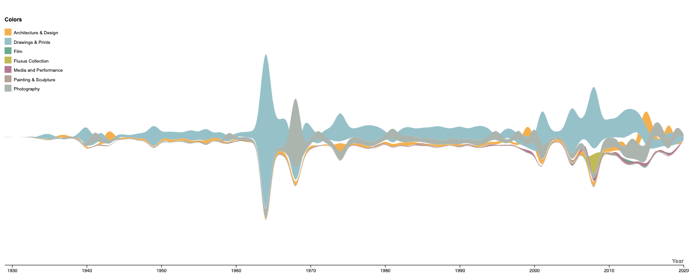

Departments
Insofar as the aim of this project as a whole is to understand museum collecting, a valid initial direction for exploration has to do with the identification of the current collection composition by department. Knowing how many works of art belong to each department provides a good bird’s eye view of the collection as a whole, as well as the size of the individual categories.

The visualization above shows the seven departments that compose MoMA, the size of each circle reflecting the number of works of art belonging to the department. It is apparent how three departments in particular – Drawings & Prints, Photography, Architecture & Design, with 76,117, 31,898, and 19,730 objects respectively – currently hold the majority of works owned by the museum.
Has this always been the case? Or have other departments been the main contributors to the museum’s collection as a whole? In other words, how has the collection evolved over time, by department?

The animated chart above shows how, while the three aforementioned departments have consistently made up the majority of the museum’s collection, the degree to which their contributions have taken place – in other words the ratio part-to-whole – has changed over time. Until 1934, the Photography department was the biggest contributor to and subset of the museum’s collection. This changed in 1935, when it was ousted by the Drawings & Prints department.
Acquisitions by the three departments continued relatively steadily throughout the 1940s, while Painting & Sculpture and Film departments acquired more modestly. In the 1950s the Drawings & Prints department started acquiring at a noticeably quicker rate, and in 1964 it more than doubled in size. In 1968 the Photography department grew markedly, and in 1975 we see the first acquisitions by the Media and Performance department. Acquisitions continue to happen regularly and without spikes up to the current day, the only obvious exception being the Fluxus Collection, which only appears in 2008.
The succession of rankings and the temporal distribution of acquisitions by department is perhaps best represented by the chart below.

Here we can see how acquisitions unfolded by department across time, as the cross-section of each stream reflects the amount of acquisitions made by the department it corresponds to. In this sense, this chart provides a fair overall picture and a simple instrument through which a comparison of acquisition trends across departments may be carried out. It also allows to identify a year in which a sizeable amount of acquisitions took place — 2008 — that went unnoticed in the previous visualizations. However, what this visualization does not provide is granularity and detail.
The stacked bar chart below, instead, provides just that, as the temporal distribution of the totality of acquisitions is broken down by department. We can see the 1964 acquisition spike by the Drawings & Prints department, the 1968 spike by Photography and the 2008 one by both Drawings & Prints and Fluxus Collection.

While some departments may be more predominantly represented within and contribute more markedly to MoMA’s collection, this has not always been the case. Naturally, such differences are not qualitative, but merely quantitative; nonetheless, open collection data afford the type of analysis presented here the ability to uncover these distributions and illuminate interesting historical trends.